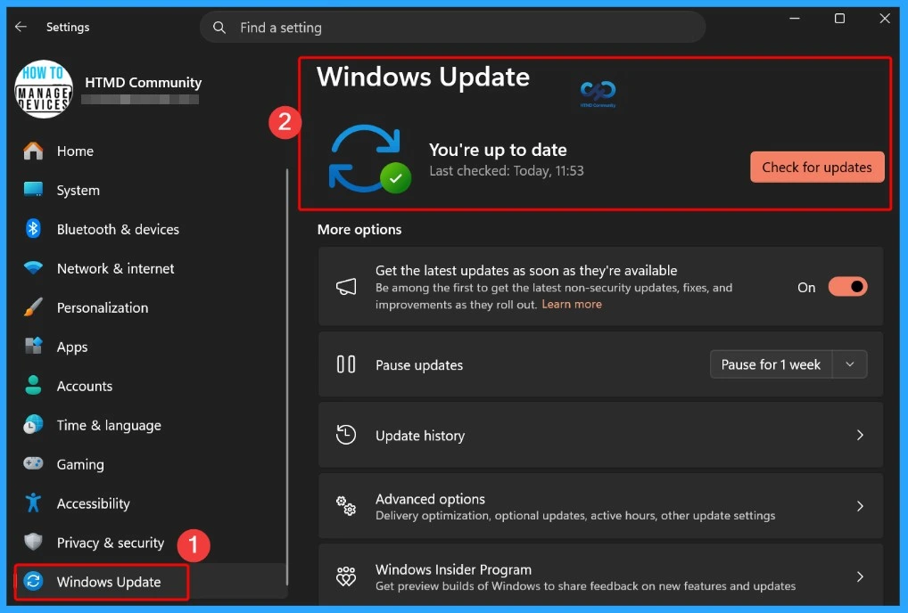
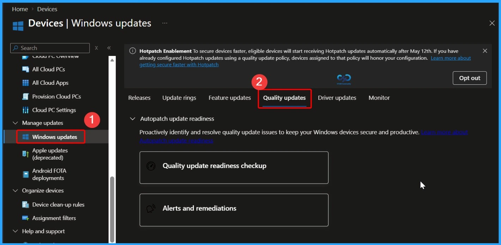

Key Takeaways
- 1,411 Security Flaws Fixed
- One Actively Exploited Zero-Day
- Two Publicly Disclosed Vulnerabilities
- Improves file previews, cloud file thumbnails, and visibility of file properties. It also remembers expanded and collapsed sections.
- Fixes an issue that could prevent domain-joined devices from signing in with valid domain credentials.
- Resolves backup and restore issues involving external drives and network locations.
The October Patch Tuesday update improves device management, security, and recovery. It adds a WinRE remote management plug-in for MDM providers, introduces Camera Roll backup with OneDrive, and strengthens kiosk mode restrictions. It also fixes an Active Directory trust issue that could prevent users from signing in to domain-joined devices with valid credentials. These improvements help make Windows devices more secure, reliable, and easier to manage.
Table of Content
3 Zero-Day Vulnerabilities and 1411 Flaws
Windows 11 October patch addresses 3 significant security vulnerabilities, including one actively exploited zero-day and two publicly disclosed vulnerabilities. CVE-2026-96951 affects Windows Shell and allows attackers to bypass the Mark of the Web security feature. CVE-2026-108398 affects .NET Framework and could enable attackers to bypass Windows Defender Application Control (WDAC) restrictions and run unauthorized applications. CVE-2026-92707 affects MessagePack-CSharp and could allow a denial-of-service attack over a network. Administrators should review the applicable security updates and prioritize patching affected systems to reduce security risks.
- 677 Elevation of Privilege Vulnerabilities
- 254 Information Disclosure Vulnerabilities
- 28 Spoofing Vulnerabilities
- 40 Security Feature Bypass Vulnerabilities
- 317 Remote Code Execution Vulnerabilities
- 73 Denial of Service Vulnerabilities
| Release Date | CVE Number | CVE Title | Publicly disclosed | Exploited |
|---|---|---|---|---|
| Oct 13, 2026 | CVE-2026-96951 | Windows Shell Security Feature Bypass Vulnerability | No | Yes |
| Oct 13, 2026 | CVE-2026-108398 | .NET Framework Security Feature Bypass Vulnerability | Yes | No |
| Oct 13, 2026 | CVE-2026-92707 | MessagePack-CSharp Denial of Service Vulnerability | Yes | No |

MessagePack-CSharp Denial of Service Vulnerability
As part of the October 2026 Zero-Day Vulnerabilities, CVE-2026-92707 is a publicly disclosed Moderate-severity Denial of Service (DoS) vulnerability affecting MessagePack-CSharp, a serialization library used in .NET applications. With a CVSS score of 5.3, the vulnerability could allow a remote attacker to trigger excessive memory allocation by sending specially crafted data, potentially causing application crashes or service disruptions.

2026 October KB5127648 KB5126653 Windows 11 Patch and 3 Zero-Day Vulnerabilities and 1411 Flaws
The October Patch Tuesday update helps keep Windows systems secure and reliable. It fixes security issues and bugs, improves system performance and stability, introduces new features, and keeps Windows and Microsoft software up to date. These updates help protect devices from threats and improve the user experience.

Windows 11 KB5127648 KB5126653 October 2026 Patch
The October Patch Tuesday update improves the Windows desktop background experience. It makes the Background settings page more reliable, adds support for DIB image files as desktop wallpapers, and improves slideshow transitions for newly created accounts. It also provides clearer background previews, making it easier for users to select and customize their desktop wallpapers.
- This update improves the reliability of the Personalization > Background page in Settings.
| Windows 11 26H2 | Windows 11 26H1 | Windows 11 25H2 and 24H2 | Windows 11 23H2 |
|---|---|---|---|
| KB5127648 | KB5127646 | KB5127648 | KB5126653 |

Updated Version of Windows 11 after Installing KB5127648 and KB5126653 October 2026 Patch
On October 13, 2026, Windows 11 versions 26H2, 25H2, and 24H2 received update KB5127648, with OS builds 26300.9711, 26200.9711, and 26100.9711. Version 23H2 received KB5126653 (OS Build 22621.7652), while version 26H1 received KB5127646 (OS Build 28000.3231).
- Windows 11 version 26h2, 25h2 and 24h2 – October 13, 2026—KB5127648 (OS Builds 26300.9711, 26200.9711 and 26100.9711)
- More Details on Windows 11 version Numbers: Windows 11 Version Numbers Build Numbers Major Minor Build Rev.
- Windows 11 Version 23h2 – October 13, 2026—KB5126653 (OS Build 22621.7652)
- Windows 11 Version 26h1 – October 13, 2026—KB5127646 (OS Build 28000.3231)

Windows 11 Features and New Improvements – KB5127648 KB5126653
The October Patch Tuesday update improves Bluetooth connectivity and reliability in Windows. It provides visual feedback when adjusting Bluetooth audio volume during calls, displays more accurate connection status for disconnected devices, and improves the stability of the Bluetooth settings page.
| New Improvements | Details |
|---|---|
| Improved File Preview – File Explorer | HTML files downloaded from the web include a Preview anyway button to acknowledge the warning and preview the file. Non-HTML files, such as PDFs, are previewed automatically. |
| File Explorer Home State – File Explorer | Remembers whether sections are expanded or collapsed, allowing users to continue where they left off. |
| Improved Thumbnail Previews – File Explorer | Improves the reliability of thumbnail previews for cloud files in the Details pane. |
| Reorganized Details Pane – File Explorer | Makes file properties easier to find and review at a glance. |
| Emoji 17.0 Support | Adds support for Emoji 17.0, including new emoji such as distorted face, fight cloud, and hairy creature. Press Windows + . to open the emoji panel. |
| Improved Existing Emoji Designs | Refines the designs of existing emoji, including saluting face, face with peeking eye, goose, lotus, and kissing cat, for better consistency across platforms. |
| Tips Widget | Adds a new Tips widget that provides short, helpful information about Windows features. You can add it to the Widgets board or lock screen. |
| Improved Background Settings | Improves the reliability of the Background page in Windows Settings. |
| DIB Image Support | Allows users to set DIB image files as desktop backgrounds. |
| Improved Slideshow | Makes desktop slideshow transitions more reliable for newly created accounts. |
| Better Background Previews | Improves the quality of desktop background previews in Settings. |
| Portrait Monitor Support | Improves background previews on monitors used in portrait mode. |
| Faster Wallpaper Changes | Improves reliability when changing desktop wallpapers quickly one after another. |
| Slideshow on Multiple Desktops | Allows slideshow wallpapers to work across multiple desktops without automatically switching back to a single picture. |
| Bluetooth Volume Feedback | Shows the volume level on the Windows screen when adjusting Bluetooth audio accessory volume during voice calls. |
| Accurate Connection Status | Improves the accuracy of Bluetooth device connection status displayed in Windows. |
| Bluetooth Settings Stability | Improves the stability of the Bluetooth and devices page in Settings when managing Bluetooth and audio devices. |
| Improved Microphone Compatibility | Improves microphone support for certain Bluetooth Classic audio devices. |
| LE Audio Improvements | Improves the reliability and performance of Bluetooth Low Energy (LE) Audio devices. |
| Shared Audio Improvements | Makes the Shared Audio feature more reliable when sharing audio with others. |
| Open Apps Maximized | Adds an accessibility setting to automatically open apps in maximized windows. Enable it under Settings > Accessibility > Visual effects. |
| Improved Bluetooth Navigation | Makes the Bluetooth Quick Settings page easier to navigate using a keyboard, gamepad, or Narrator. |
| Modernized Magnifier Toolbar | Updates the Magnifier toolbar icons to match the Windows 11 design. |
| Improved Toolbar Layout | Adjusts spacing and padding in the Magnifier toolbar for a cleaner look. Existing zoom controls, keyboard shortcuts, views, and Read Aloud features remain unchanged. |
| Improved Printer Settings | Makes the Printers & Scanners page more reliable when viewing and managing settings. |
| App Version Details | Shows version numbers at the top level of Settings > Apps > Installed apps for packaged apps. |
| Improved Time Format | Ensures the time picker follows your preferred 12-hour or 24-hour format when setting active hours or scheduling Night light. |
| Touchpad Gestures | Adds single-finger scrolling from the left or right side of the touchpad and automatic scrolling by moving fingers near the touchpad edge. |
| Copilot Key Remapping | Allows users to change the Copilot key to work as the Right Ctrl or Context Menu key. |
| Camera Roll Backup | Adds a Camera roll backup option in Settings to help eligible users back up photos to OneDrive. Setup can be completed using a QR code on a mobile phone. |
| New Font Script Support | Adds support for Garay and Beria Erfe scripts to the Ebrima font. |
| Improved Adlam Font | Updates Adlam character designs in Ebrima to follow the current Unicode standard and improve consistency. |
| WinRE Remote Management | Adds a remote management plug-in to extend Windows Recovery Environment (WinRE) management capabilities for MDM providers. |
| Kiosk Mode Restrictions | Disables Windows + Tab in restricted UX kiosk mode and Windows + A and Windows + C in single-app kiosk mode. |
| Windows Backup Changes | Removes the PC-to-PC Migration feature. Users can use Windows Backup to back up and restore supported files and settings when moving to a new PC. |
| Power and Battery Improvements | Improves display and performance when a plugged-in laptop incorrectly detects a switch from AC power to battery power. |

Windows 11 Fixed Issues – KB5127648 KB5126653
The October Patch Tuesday update improves Windows reliability, security, and device functionality. It fixes issues affecting File Explorer, Bluetooth audio, camera settings, and the built-in camera. It also resolves an Active Directory trust issue that could prevent users from signing in with valid domain credentials and addresses problems with File History backup and restore.
| Windows 11 Fixed Issues | Details |
|---|---|
| Address Bar Fix – File Explorer | Fixes an issue where the address bar contents could disappear when entering edit mode by clicking near its right side. |
| Bluetooth Toggle Fix | Fixes an issue where Bluetooth was turned off but the Settings toggle still showed as on. |
| Bluetooth Audio Crash Fix | Fixes a crash (error code 0x139) that could occur while streaming Bluetooth audio. |
| Camera Settings Fix | Improves the saving of the Allow multiple apps to use camera at the same time option in Camera settings. |
| Secure Trust Fix | Fixes an issue where domain-joined devices could lose their trust relationship with Active Directory, preventing users from signing in with valid domain credentials. |
| Camera Fix | Fixes an issue where the built-in camera could stop working in the Camera app and other apps. |
| File History Fix | Fixes an issue where File History could fail to back up or restore files to external drives or network locations, even when the drive was connected and working. |
| Sysmon File Validation Fix | Fixes executable file validation issues that could cause unpredictable memory usage and unreliable tampering detection. |
| Sysmon Driver Fix | Fixes a potential system crash caused by the Sysmon file system filter driver when opening an archive directory failed. |
| Sysmon Alert Fix | Fixes incorrect Event ID 25 tampering alerts generated for the Windows Session Manager (smss.exe) process. |
Intune Windows 11 KB5127648 KB5126653 Deployment
You can use Microsoft Intune to deploy the October 2026 Windows cumulative update without creating a new update policy every month. Intune manages monthly quality updates through existing Windows Quality Update policies. If some devices haven’t received the october 2026 update, you can accelerate deployment by creating or updating a Windows Quality Update profile in the Intune admin center. Go to Devices > Manage Updates > Windows Updates > Quality Updates to manage the update deployment.
- In the Intune admin center, go to Devices > Manage Updates > Windows Updates > Quality Updates
Read More – Software Update Patching Options with Intune Setup Guide
More Details on Zero Day Out Of Band Patch Deployment Using Intune MEM Expedite Best Option and Intune Reporting Issue: Expedite Windows Security Patch Deployment.

SCCM Windows 11KB5127648 KB5126653 Deployment
You can deploy the October 2026 Windows 11 cumulative update using SCCM, Windows Server Update Services (WSUS), or Microsoft Intune. In SCCM, start a WSUS synchronization from the Software Library to retrieve the latest updates.
After the sync completes, search for the October 2026 cumulative update using its KB number or by searching for “10-2026 Cumulative Update for Windows 11“. Once identified, deploy the update through your standard monthly patching process to ensure all managed devices receive the latest security and quality improvements.
Direct Download Links for Windows 11 KB5127648 KB5126653
You can manually download the October 2026 Windows 11 cumulative update from the Microsoft Update Catalog. Simply search for the October 2026 cumulative update or its KB number, then download the correct package for your Windows version. This method is useful for manually installing the update on individual devices or on systems that are not managed through Microsoft Intune, SCCM, or WSUS.
| Cumulative Update for Windows 11 | Products | Size | Direct Download |
|---|---|---|---|
| 2026-01 Cumulative Update for Windows 11, version 26H2 for x64-based Systems(KB5127648) | Windows 11 26H2 | 5062.9 MB | Download |
| 2026-01 Cumulative Update for Windows 11, version 25H2 for x64-based Systems(KB5127648) | Windows 11 25H2 | 5062.9 MB | Download |
| 2026-01 Cumulative Update for Windows 11 Version 24H2 for x64-based Systems (KB5127648) | Windows 11 24H2 | 5062.9 MBMB | Download |
| 2026-01 Cumulative Update for Windows 11 Version 23H2 for x64-based Systems (KB5126653) | Windows 11 23H2 | 1166.3 MB | Download |

Resources
October 13, 2026—KB5127648 (OS Builds 26300.9711, 26200.9711 and 26100.9711) | Microsoft Support
Need Further Assistance or Have Technical Questions?
Join the LinkedIn Page and Telegram group to get the latest step-by-step guides and news updates. Join our Meetup Page to participate in User group meetings. Also, join the WhatsApp Community and the Whatsapp channel to get the latest news on Microsoft Technologies. We are there on Reddit as well.
Author
Anoop C Nair is Workplace Technology solution architect with 25+ years of experience in global enterprise organizations such as JP Morgan, Capgemini, etc. He is Microsoft Certified Trainer. Microsoft MVP from 2015 onwards for consecutive 11 years! He also conducts Intune and modern workplace tech training for enterprise organizations. He is Blogger, Speaker, and Founder of HTMD Community and HTMD Conference. His focus is on Device Management technologies such as Intune, Windows, Cloud PC. He writes about technologies like Intune, SCCM, Windows, Cloud PC, Windows, Entra, Microsoft Security.